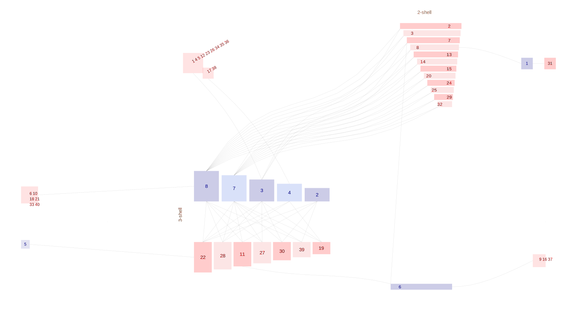

|  |
Heleno Ruben H., Ramos Jaime A., Memmott Jane (2013). Integration of exotic seeds into an Azorean seed dispersal network. Biological Invasions. 15, 5, 1143-1154. Serra da Tronqueira |
|
| Seed |
| 1 Carduelis carduelis | | 2 Erithacus rubecula | | 3 Fringilla coelebs | | 4 Pyrrhula murina | | 5 Regulus regulus | | 6 Serinus serinus | | 7 Sylvia atricapilla | | 8 Turdus merula |
|
| Disperser |
| 1 Aphanes microcarpa | | 2 Bellis perennis | | 3 Calluna vulgaris | | 4 Carex viridula | | 5 Carex vulcani | | 6 Centaurium erythraea | | 7 Cerastium sp1 | | 8 Clethra arborea | | 9 Conyza bonariensis | | 10 Cryptomeria japonica | | 11 Duchesnea indica | | 12 Epilobium parviflorum | | 13 Fragaria vesca | | 14 Hedera azorica | | 15 Hedychium gardneranum | | 16 Holcus lanatus | | 17 Hypericum humifusum | | 18 Ilex perado | | 19 Juncus effusus | | 20 Juniperus brevifolia | | 21 Laurus azorica | | 22 Leycesteria formosa | | 23 Lotus pedunculatus | | 24 Morella faya | | 25 Myrsine africana | | 26 Persicaria capitata | | 27 Pittosporum undulatum | | 28 Potentilla erecta | | 29 Rubus ulmifolius | | 30 Solanum nigrum | | 31 Sonchus tenerrimus | | 32 Unidentified sp1 | | 33 Unidentified sp2 | | 34 Unidentified sp3 | | 35 Unidentified sp4 | | 36 Unidentified sp5 | | 37 Unidentified sp6 | | 38 Unidentified sp7 | | 39 Vaccinium cylindraceum | | 40 Viburnum tinus |
|
|